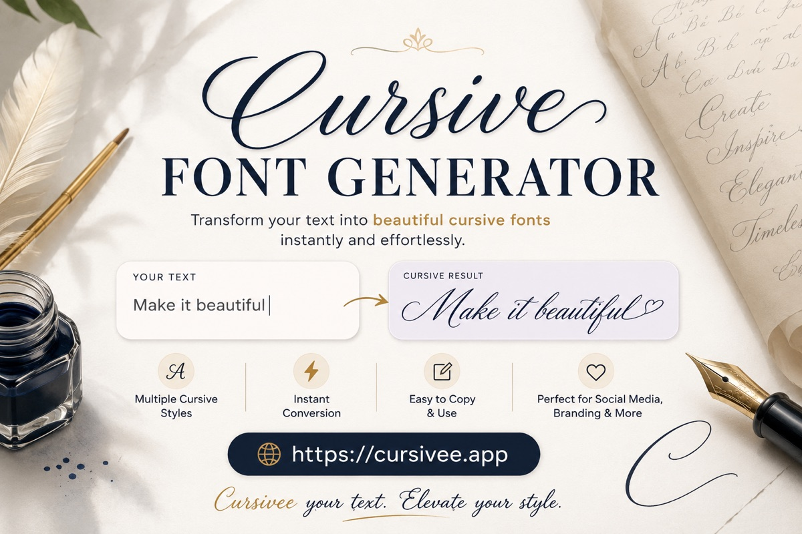

No style matches that name.
A free cursive font generator: type once and get twenty-one alphabets — script, blackletter, bold, bubbles — that paste into any bio, caption, or username that only accepts plain text.
No style matches that name.
This cursive text generator swaps your letters for Unicode script characters rather than applying a typeface. That difference matters. A font lives inside the app you are using, while these characters live in the text itself, so the styling travels with your words when you copy and paste them into a bio, caption, comment or chat.
Type a name for a profile, a single line for a caption, or one initial on its own. The style list doubles as a full cursive alphabet: every letter you type, rendered twenty-one ways at once and updating as you type.
There is no paid tier, no account and no limit on how much you convert. If you want the most decorative look, try the bold script and blackletter styles first.
The output is text characters, never an image or a font file. It can show you how a name looks in script, but it cannot produce a signature to place in a document, or a printable sheet for handwriting practice. It also covers Latin letters only: Unicode has no script alphabet for Cyrillic, so Russian text passes through unchanged.
Be careful with anything permanent, such as a tattoo. These characters are drawn by whatever font a device happens to have, so the shapes on your screen are not the shapes on someone else's. Take an actual typeface to your artist, not a screenshot of this page.

Type in the box at the top of the page. This cursive generator swaps each letter for a Unicode script form as you type — twenty-one styles at once. Pick the look you want, press Copy, and paste it into a bio, caption, or anywhere else that accepts plain text.
Put your name in the box. Every style below updates instantly, so you can compare script, bold script, and blackletter before you copy. That is the whole cursive name generator flow — no form to submit, and the result pastes into a profile or caption as ordinary text.
This gives you a cursive look of a name, not a handwritten signature image. Type the name, pick a flowing script style, and copy the characters. For a mark on a document you still need a drawn signature or an image file — these are text characters that travel with the words, not a scan of a pen stroke.
The best one depends on what the letters are for. If you need text you can paste into a bio, caption, or chat, a Unicode cursive font generator like this one is the right tool — the styling travels with the characters. If you need a real typeface for print, a logo, or a tattoo, install an actual cursive font instead. These letters are drawn by whatever face the other person’s device happens to have.
Type the word or phrase in the box. Spaces and punctuation stay as they are; each letter that has a Unicode counterpart is swapped for a script form. Copy the style you like. It works for a single word or a whole line — the page is a cursive word generator as much as it is a name tool.
Something else, strictly speaking — and that is exactly why it works. A font is a set of drawings your app chooses. These are Unicode characters: 𝒜 and A are as different as A and B, with their own permanent numbers in the standard. Because the difference lives in the text rather than in a style setting, it survives the trip into apps that never offered you a typeface menu.
In bios and captions, almost always. In usernames, it varies — some platforms strip these characters, some replace them with plain letters, and some reject the entry outright. Paste a short test before you commit to anything you would hate to lose.
Because that character does not exist. Unicode added these alphabets for mathematicians and typesetters, one at a time, so a few have gaps. Any letter without a counterpart comes through untouched, and no generator anywhere can invent it.
Free, with no account and no limit. Every conversion runs in your own browser — nothing you type is sent anywhere, logged, or stored. Close the tab and it is gone. The privacy page spells this out.
Here's the odd bit. You can't change the font in your Instagram bio. There's no font menu — there never was one. And yet you can paste in 𝒸𝓊𝓇𝓈𝒾𝓋ℯ letters and they just… turn up. 🤔
That's because none of this is a font. They're characters, in the same way that A and B are different characters. Someone decided, decades ago, that mathematicians needed a script 𝒜 that meant something different from a plain A — so it got its own slot in Unicode. Your caption is quietly borrowing from a maths textbook.
Most of the alphabets here have a story like that. Blackletter stuck around for old manuscripts. The wide letters came from Japanese typewriters. The circled ones came off signage. None of it was made for social media, and all of it works there anyway. 🧵
Which is the useful part, because it means nobody has to give you permission. Paste it into a field that has never heard of typography and it arrives intact. There's nothing to strip out. It's just text, doing what text does. ✨
One thing to keep in mind, though. 🔍 A screen reader doesn't see 𝓱𝓮𝓵𝓵𝓸 as a word — it reads out a string of maths symbol names, or skips it completely. So use this for flair, and keep your name and anything that actually matters in ordinary letters. Someone will thank you for it.
Other than that, go for it. 🖋️ Type something, scroll the list, star the ones you keep coming back to. It's free, nothing you type ever leaves your browser, and it works with the wifi switched off. Bookmark cursivee.app and twenty-one alphabets are always one paste away.